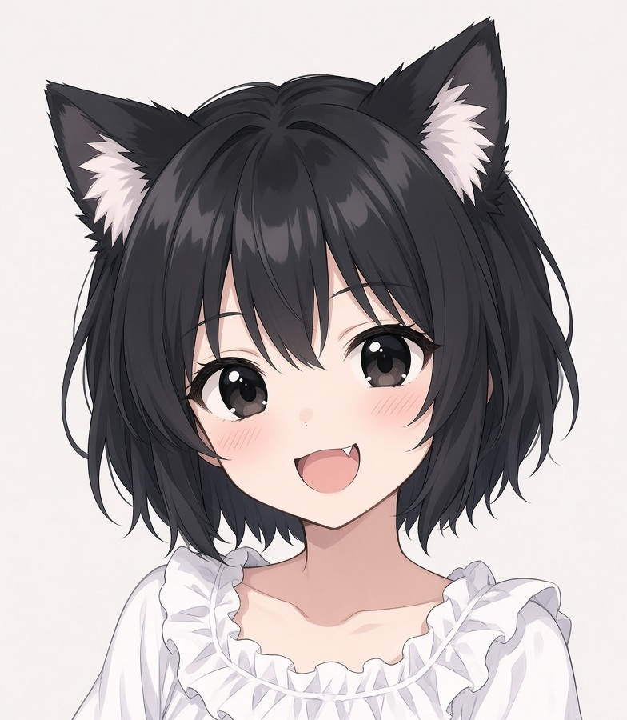

主人公／8歳の少女
本名は「トエリーナ・フォン・エストリア」。
転生者でいろいろやりすぎて、髪が両親と違うピンク色だったことから、孤児院へ追放された。孤児院では素性を隠しトエと名乗る。
一応隠しているが鑑定や魔法が使えるため、それを使いつつ貧乏質素な生活を採取や簡単な狩りや冒険をして改善していく。
友達たちと一緒に森を探索し冒険者見習いとなって外の森へと冒険を進める。頑張っちゃう、女の子。
隣席の友達／8歳
金髪。目は緑。当初は一緒にヤギの世話係をしている。一緒に冒険に出る最初のパートナー。
隣のベッド、食事も隣の席で、先輩のメンバーだが、トエと親しくしてくれる。
女の子／7歳
ちょっとクールな感じの女の子。お姉ちゃんがいる。トエより少し小さい。
茶色目に茶色髪。美人よりもかわいい感じ。スライムがちょっと苦手。

猫人族／8歳
短い黒髪、黒目、猫尻尾。獣人の風当たりが強いことからおとなしくしていた。
トエの教室で勉強するようになって興味を持ってから一緒に行動するように。
修道院と孤児院の院長
修道院と孤児院の院長先生。みんなをとりまとめている。みんなのお母さん。
ミサをしたり説法をしたりと教育熱心で、トエたちに冒険者業をすすめてくる。
商人／おじさん
孤児院に出入りしている商人。トエが採ってきた薬草や魔核やキノコを買い取ってくれる。
干し肉や、香辛料などを販売してくれる。みんなの人気者。
冒険者／25歳
C級冒険者で、暇なときにトエたちの面倒を見てくれる。
剣術が得意だけど、火魔法以外はあまり使えないみたい。
冒険者／40歳
冒険者で、なぜかトエたちに興味を持ち面倒を見てくれる。
スキンヘッドで明らかに怖そうだけど、根はいい人らしい。けっこう鈍感。